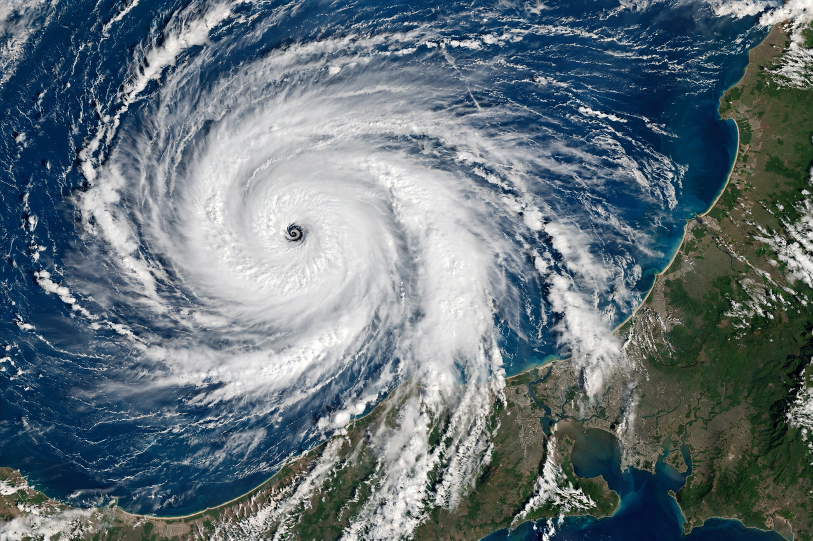
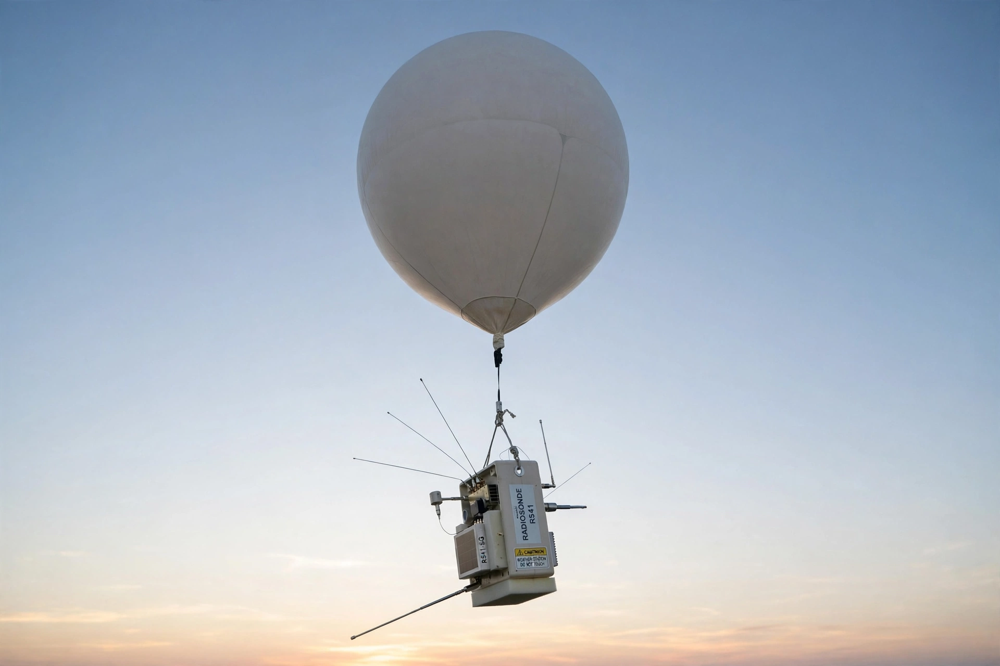

Meteorology

Meteorology is the scientific study of Earth's Atmosphere and its phenomena, especially the Weather: how storms form, how winds and pressure systems evolve, and how the atmosphere will behave over the coming hours and days.
Meteorology differs from climatology in timescale: meteorologists study processes from minutes to a few weeks, while climatologists study the statistics of weather over decades and longer.
Scales and methods
Meteorological phenomena span scales from turbulence around a single building (microscale), through {L('Thunderstorm','thunderstorms')} and sea breezes (mesoscale), to cyclones and fronts thousands of kilometres across (synoptic scale) and the planetary circulation. Each scale has its characteristic tools and theory.

Observation is the foundation: surface stations and ships, weather balloons carrying radiosondes, radar networks that map precipitation, aircraft reports, and since 1960 a fleet of geostationary and polar-orbiting weather satellites that image clouds and measure temperatures through the depth of the atmosphere.
Weather forecasting
Modern forecasting runs on numerical weather prediction: supercomputers solve the equations of fluid motion and thermodynamics on a three-dimensional grid of the atmosphere, initialised from the global observing network. Since the first successful computer forecasts in the 1950s, skill has improved steadily — a five-day forecast today is about as accurate as a three-day forecast was a generation ago.
Forecast centres such as the European Centre for Medium-Range Weather Forecasts and the US National Weather Service run ensemble systems, launching many slightly different forecasts to gauge uncertainty and the risk of extreme events.
Applications
Beyond daily forecasts, meteorology underpins aviation and marine safety, agriculture, flood and storm warnings, air-quality prediction, and the siting and operation of wind and solar farms. See also {L('Climate')} and {L('Monsoon')}.
See also: Weather · Atmosphere · Climate · Thunderstorm · Jet stream · National Oceanic and Atmospheric Administration